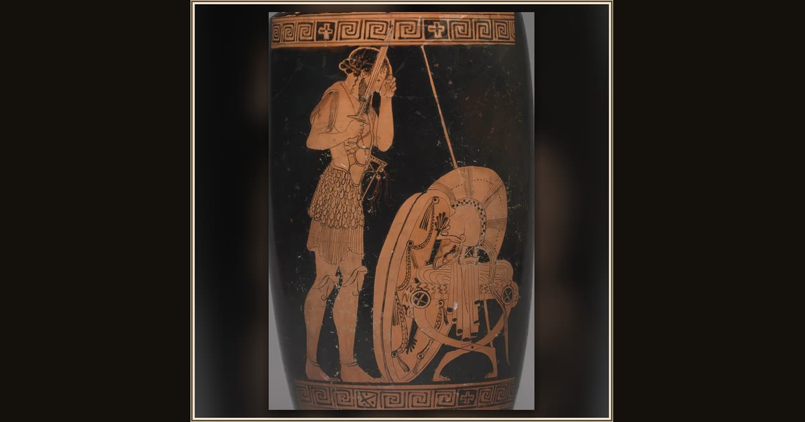

Red-Figure Lekythos (Oil Vessel): Warrior Cutting Hair
Oionokles Painter (Greek, Attic, active c. 480–460 BCE) · c. 480–470 BCE · cma
An Attic oil flask shows a warrior cutting his hair beside a shield and helmet; Herodotus says the Persian scout found Spartans exercising and combing their hair before battle (7.208.3) Explore its place in Herodotus's Histories, Book VII, chapter 507.